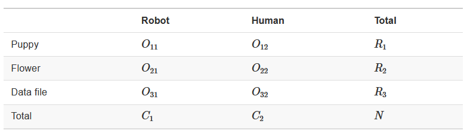
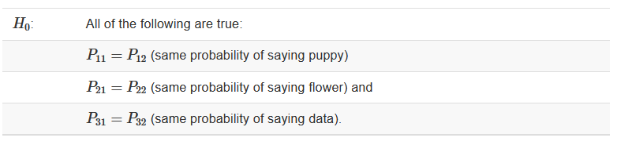
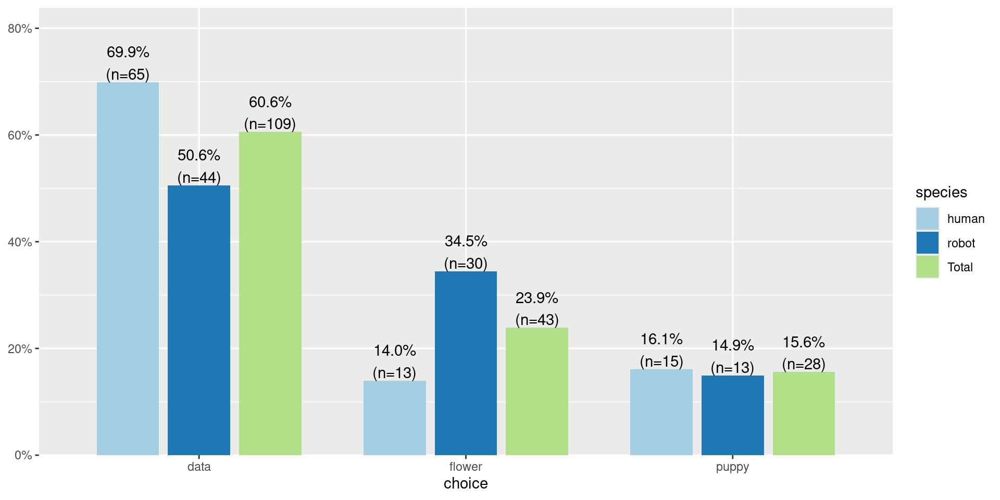
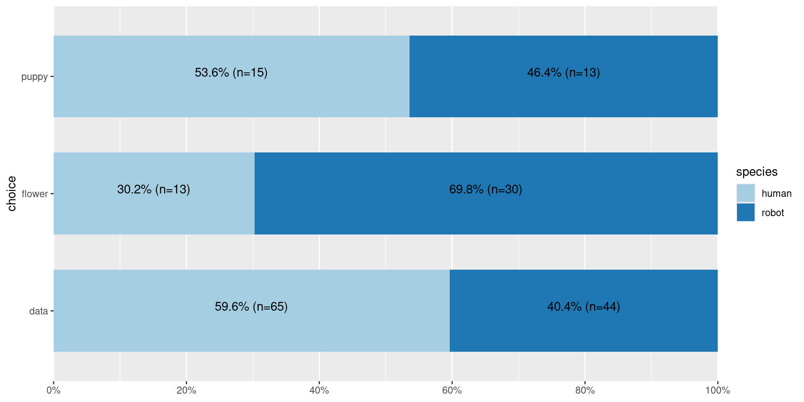
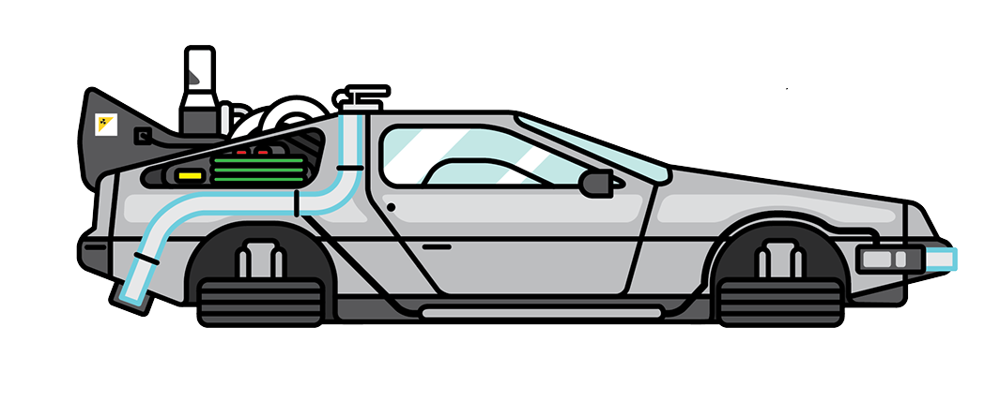

PSYC 640 - Nov 12, 2024
Steps to Hypothesis testing
\(\chi^2\) goodness of fit test
The chi-square test of independence (Book Chapter 12.2)
Review the process of running analyses
Next couple of weeks - Faculty Interviews
Family things
Take care of yourself
Define null and alternative hypothesis.
Set and justify alpha level.
Determine which sampling distribution ( \(z\), \(t\), or \(\chi^2\) for now)
Calculate parameters of your sampling distribution under the null.
Identify your hypothesis.
Determine the null hypothesis (if different from being 0)
Choose the statistical test
Make sure your data are formatted appropriately
How often will you conducted a \(\chi^2\) goodness of fit test on raw data?
How often will you come across \(\chi^2\) tests?
The goodness of fit test is used to statistically test the how well a model fits data
To calculate Goodness of Fit of a model to data, you build a statistical model of the process as you believe it is in the world.
Then you estimate each subject’s predicted/expected value based on your model.
You compare each subject’s predicted value to their actual value – the difference is called the residual ( \(\varepsilon\) ).
If your model is a good fit, then
\[\Sigma_1^N\varepsilon^2 = \chi^2\]
We would then compare that to the distribution of the Null: \(\chi^2_{N-p}\) .
Significant chi-square tests suggest the model does not fit – the data have values that are far away from “expected.”
The tests that we conducted last class, we were focused on the way our data (NY Students Superpower Preferences) “fit” to the data of an expected distribution (US Student Superpower Preferences)
Although this could be interesting, sometimes we have two categorical variables that we want to compare to one another
Let’s take a look at a scenario:
We are part of a delivery company called Planet Express
Let’s take a look at a scenario:
We are part of a delivery company called Planet Express
We have been tasked to deliver a package to Chapek 9
Let’s take a look at a scenario:
We are part of a delivery company called Planet Express
We have been tasked to deliver a package to Chapek 9
Unfortunately, the planet is inhabited completely by robots and humans are not allowed
In order to deliver the package, we have to go through the guard gate and prove that we are able to gain access
(Robot Voice)
WHICH OF THE FOLLOWING WOULD YOU MOST PREFER?
A: A Puppy
B: A pretty flower from your sweetie
C: A large properly-formatted data file
CHOOSE NOW!
Luckily, I have connections with Chapek 9 and we can see if there are any similarities between the responses.
Let’s work through how to do a \(\chi^2\) test of independence (or association)
First, we have to load in the data:
Take a peek at the data:
Look at the summary stats for the data:
There are a few different ways to look at these tables. We can use xtabs()
Research hypothesis states that “humans and robots answer the question in different ways”
Now our notation has two subscript values?? What torture is this??

Once we have this established, we can take a look at the null

Claiming now that the true choice probabilities don’t depend on the species making the choice ( \(P_i\) )
However, we don’t know what the expected probability would be for each answer choice
Let’s use R to make the table look fancy and calculate the totals for us!
We will use the library sjPlot (link)
| choice | species | Total | |
|---|---|---|---|
| human | robot | ||
| data | 65 | 44 | 109 |
| flower | 13 | 30 | 43 |
| puppy | 15 | 13 | 28 |
| Total | 93 | 87 | 180 |
| χ2=10.722 · df=2 · Cramer's V=0.244 · p=0.005 | |||
Degrees of freedom comes from the number of data points that you have, minus the number of constraints
Using contingency tables (or cross-tabs), the data points we have are \(rows * columns\)
There will be two constraints and \(df = (rows-1) * (columns-1)\)
We now have all the pieces for a \(classic\) Null Hypothesis Significance Test
But we have these computers, so why not use them?
Using the associationTest() from the lsr library
Chi-square test of categorical association
Variables: choice, species
Hypotheses:
null: variables are independent of one another
alternative: some contingency exists between variables
Observed contingency table:
species
choice human robot
data 65 44
flower 13 30
puppy 15 13
Expected contingency table under the null hypothesis:
species
choice human robot
data 56.3 52.7
flower 22.2 20.8
puppy 14.5 13.5
Test results:
X-squared statistic: 10.722
degrees of freedom: 2
p-value: 0.005
Other information:
estimated effect size (Cramer's v): 0.244 Maybe we want to keep it traditional and use chisq.test() will there be a difference?
Book Ch 12.6 - The most typical way to do a chi-square test in R
But what if we want to visualize it? Use sjPlot again

Let’s clean that up a little bit more

Pearson’s \(\chi^2\) revealed a significant association between species and choice ( \(\chi^2 (2) =\) 10.7, \(p\) < .01), such that robots appeared to be more likely to say that they prefer flowers, but the humans were more likely to say they prefer data.
The expected frequencies are rather large
Data are independent of one another

We are going to start from the beginning and walk through some of the components to work with data from the start
This will prep everyone for the group based lab next class where similar types of questions will be asked.
We will use the data about Pokemon (https://www.kaggle.com/datasets/abcsds/pokemon?resource=download)
Other possibilities:
World Mental Health: https://www.kaggle.com/datasets/imtkaggleteam/mental-health
Spotify Songs https://www.kaggle.com/datasets/abdulszz/spotify-most-streamed-songs